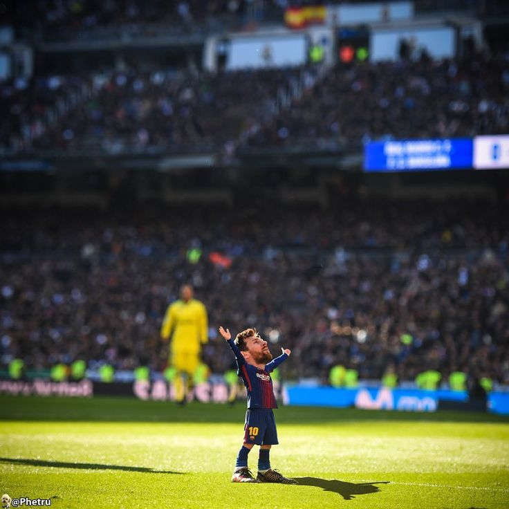

Este es nuestro super equipo de especialistas en la materia:

Este es el empleado Lorenzo de los Carmenes
Lorenzo de los Carmenes es el CEO de la empresa. Al frente de la compañía,
impulsa la visión estratégica, el crecimiento sostenible y la innovación
en cada área del negocio. Con un enfoque orientado a resultados y a las personas,
lidera los equipos promoviendo una cultura de excelencia, cercanía y compromiso,
asegurando que la organización avance con solidez hacia sus objetivos a largo plazo.
Este es el empleado Neymar tres santos
Neymar Junior Tres Santos es el responsable de informática de la empresa.
Se encarga de garantizar la estabilidad, seguridad y óptimo rendimiento
de toda la infraestructura tecnológica de la compañía. Con una sólida
capacidad analítica y resolutiva, gestiona sistemas, redes y soporte técnico
para asegurar que cada departamento cuente con las herramientas digitales
necesarias para operar con eficiencia.